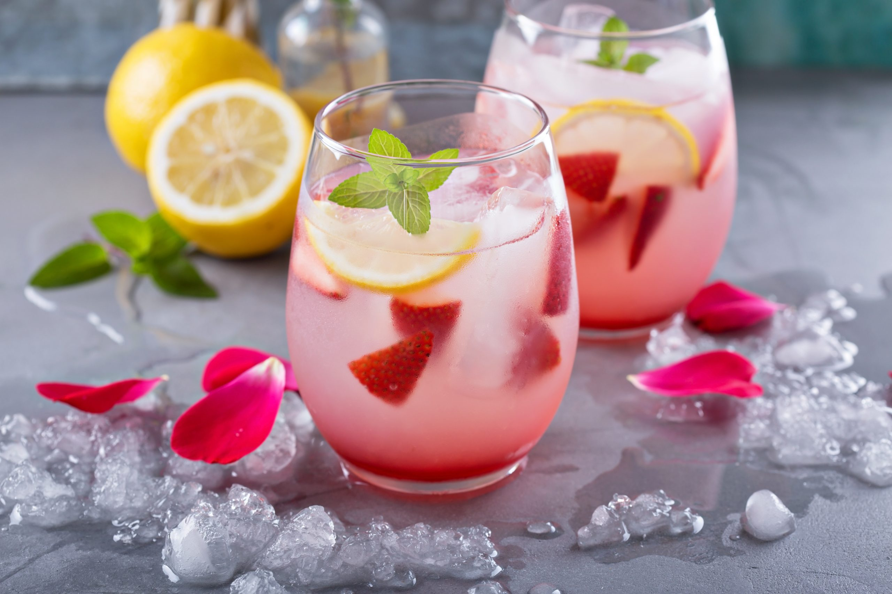

Bebidas
Negroni

Negroni é um coquetel clássico italiano feito com partes iguais de gin, Campari (ou outro bitter) e vermute tinto, guarnecido com uma casca de laranja. Para prepará-lo, misture os ingredientes com gelo em um copo, mexa suavemente e finalize com a rodela de laranja.
Ingredientes
- 1 dose de Campari
- 1 dose de Vermute tinto
- 1 dose de Gin
- 1 rodela de laranja com casca e sem semente
- Gelo à vontade
Modo de preparo
- Misture as doses em um copo.
- Mexa levemente com uma colher.
- Adicione o gelo.
- Mexa por mais 30 segundos.
- Enfeite com a laranja.
Soda italiana

A soda italiana é uma bebida refrescante feita com água com gás, xarope saborizado (de frutas, por exemplo) e gelo. Para prepará-la, encha um copo com gelo, adicione o xarope de sua preferência (como morango, maçã verde ou groselha) e complete com água com gás. Mexa suavemente para misturar e, se desejar, adicione um toque de limão ou uma fruta para decorar.
Ingredientes
- Gelo
- Água com gás (club soda)
- Xarope de fruta ou outro sabor de sua preferência
- Suco de limão
- Rodela de limão ou outras frutas frescas para decorar
Modo de preparo
- Encha o copo com gelo: Coloque gelo no copo até cerca de 2/3 ou até cobrir o fundo.
- Adicione o xarope: Coloque 2 a 3 colheres de sopa (ou cerca de X ml) do seu xarope favorito sobre o gelo.
- Complete com água com gás: Despeje a água com gás no copo, deixando um pequeno espaço no topo.
- Misture: Mexa delicadamente com uma colher longa ou bailarina para incorporar o xarope no fundo com a água.
- Finalize (opcional): Adicione algumas gotas de suco de limão e/ou uma rodela de limão ou fruta para decorar e dar um toque a mais. Sirva imediatamente.
↑Topo